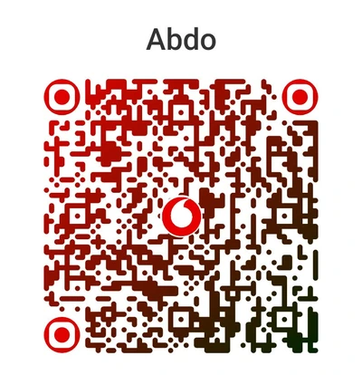

ترجم أي شيء على شاشتك، واسمعه بلغتك
Translate anything on your screen, and hear it in your language
ألعاب، فيديوهات، مواقع وبرامج: حدد النص فتظهر ترجمته فوقه، أو دع البرنامج يسمع الصوت ويترجمه ويدبلجه بصوت طبيعي.
Games, videos, websites and apps: select text and see its translation on top of it, or let the app listen, translate and dub the audio in a natural voice.
ظهر تحذير ويندوز عند التشغيل؟Windows warning on first run? هذا الحلHere’s what to do
طبيعي لأن البرنامج جديد وغير موقّع رقميًا بعد. خطوتان:
Normal for a new app that isn’t code-signed yet. Two clicks:
1Microsoft Defender SmartScreen prevented an unrecognized app from starting. Running this app might put your PC at risk.
Microsoft Defender SmartScreen prevented an unrecognized app from starting. Running this app might put your PC at risk.
App:ScreenTranslator-28-Setup.exe
Publisher:Unknown publisher
في ويندوز العربي: «مزيد من المعلومات» ثم «تشغيل على أي حال».
المزايا
Features
كل ما تحتاجه لتفهم ما تراه وتسمعه
Everything you need to understand what you see and hear
ست أدوات في برنامج واحد، تعمل فوق أي برنامج آخر دون أن تقطعه.
Six tools in one app, working on top of anything else without interrupting it.
ترجمة الشاشة
Screen translation
اضغط Ctrl+Alt+T وحدد أي نص، فتظهر الترجمة فوقه في مكانه أو في شريط أسفل الشاشة.
Press Ctrl+Alt+T and select any text; the translation appears over it or in a bar at the bottom.
ترجمة مباشرة
Live translation
يتابع المنطقة نفسها ويترجم كلما تغيّر النص: حوارات الألعاب وترجمات الفيديو دون أن تضغط شيئًا.
Watches the same area and translates whenever the text changes: game dialogue and video captions, hands-free.
ترجمة الصوت ودبلجته
Audio translation & dubbing
يسمع صوت الجهاز أو الميكروفون، ويكتب الترجمة كشريط، وينطقها بصوت طبيعي بأكثر من لهجة.
Listens to your PC or microphone, writes the translation as subtitles, and speaks it in a natural voice.
دبلجة ملفات الفيديو
Video & audio files
أفلت فيديو: تحصل على ملف ترجمة لأي مشغّل، ونسخة مدبلجة كاملة بعد أن تراجع النص وتعدّله.
Drop a video: get a subtitle file for any player, and a fully dubbed copy after you review and edit the text.
وضع التعلم
Learning mode
يعرض الأصل مع الترجمة معًا، لتتعلم اللغة وأنت تشاهد أو تلعب.
Shows the original next to the translation, so you learn the language while you watch or play.
يعمل بلا إنترنت أيضًا
Works offline too
أكثر من 39 لغة. وإن أردت أن يبقى كل شيء على جهازك، فالترجمة وفهم الكلام يعملان دون إنترنت.
39+ languages. If you want everything to stay on your PC, translation and speech recognition run offline.
جولة
Tour
من داخل البرنامج
Inside the app
نسخة تفاعلية من نوافذ البرنامج: اضغط الأزرار وتنقّل بين الأقسام.
An interactive copy of the app’s windows: press the buttons and move between sections.
مرحبًا بك
صوت الدبلجة · العربية · نحو 82 ميغابايت
نصيحة: Ctrl+Alt+T يحدد منطقة من أي مكان، وCtrl+Alt+A يشغّل ترجمة الصوت.
ترجمة ودبلجة ملف
فيديو أو مقطع صوتي على جهازك؟ يُحوّل كلامه إلى نص ويُترجم ويُدبلج بصوت طبيعي. تراجع النص وتعدّله قبل الدبلجة.
١ الملف
٢ الخيارات
الصوت والدبلجة
ترجمة الصوت
صوت الدبلجة والنطق
البداية
Getting started
جاهز في دقيقة
Ready in a minute
لا يحتاج بايثون ولا أي برنامج آخر.
No Python or anything else to install.
- نزّل وثبّتDownload & install شغّل المثبّت. لا يطلب صلاحيات المسؤول، أو استخدم النسخة المحمولة من أي مجلد. Run the installer, no admin rights needed. Or use the portable version from any folder.
- حدد نصًاSelect text اضغط Ctrl+Alt+T واسحب حول أي نص، أو Ctrl+Alt+L للترجمة المباشرة. Press Ctrl+Alt+T and drag around any text, or Ctrl+Alt+L for live mode.
- أو استمعOr listen اضغط Ctrl+Alt+A فيترجم ما يُقال في الفيديو أو اللعبة أو المكالمة. Press Ctrl+Alt+A to translate what’s said in a video, game or call.
المتطلبات
Requirements
على أي جهاز يعمل؟
What does it run on?
يتكيّف البرنامج مع جهازك: على الأجهزة الأضعف يختار تلقائيًا نماذج أخف لفهم الكلام.
The app adapts to your PC: on weaker machines it automatically picks lighter speech models.
| النظام | System | ويندوز 10 أو 11، نسخة 64 بتWindows 10 or 11, 64-bit |
|---|---|---|
| ويندوز 7 و8 | Windows 7 & 8 | غير مدعومين: الأدوات التي بُني عليها البرنامج لم تعد تعمل عليهماNot supported: the tools the app is built on no longer run on them |
| المساحة | Disk | نحو 450 MB، وما تختار تنزيله لاحقًا من لغات ونماذج بلا إنترنتAbout 450 MB, plus any offline languages and models you choose to download |
| الإنترنت | Internet | للترجمة الأدق والأصوات الطبيعية. وبدونه تعمل الترجمة وفهم الكلام على جهازك بعد تنزيلهماFor the best translation and natural voices. Without it, translation and speech run on your PC once downloaded |
| كرت الشاشة | Graphics card | غير مطلوب. كرت NVIDIA يجعل فهم الكلام أسرع وأدقNot required. An NVIDIA card makes speech recognition faster and more accurate |
أسئلة
FAQ
أسئلة شائعة
Questions
هل البرنامج مجاني؟Is it free?
نعم، مجاني بلا إعلانات. قد تأتي مزايا إضافية مدفوعة لاحقًا، وما هو مجاني في إصدارك يبقى يعمل.
Yes, free with no ads. Extra paid features may come later; what’s free in your version keeps working.
هل يرسل ما على شاشتي إلى الإنترنت؟Does it send my screen to the internet?
يرسل فقط النص الذي تطلب ترجمته (أو الصوت المطلوب فهمه) إلى خدمة الترجمة، لا صورة الشاشة. ومن الإعدادات ← الترجمة يمكنك جعل كل شيء يبقى على جهازك.
Only the text you ask to translate (or the audio to recognize) goes to the translation service, never a picture of your screen. In Settings → Translation you can keep everything on your PC.
هل يعمل في الألعاب بملء الشاشة؟Does it work in full-screen games?
إن لم تظهر الترجمة فوق لعبة بملء الشاشة، اجعل اللعبة في وضع «نافذة بلا حواف» (Borderless) من إعدادات العرض فيها.
If the translation doesn’t show over a full-screen game, switch the game to borderless-window mode in its display settings.
كيف أحصل على التحديثات؟How do I get updates?
البرنامج يتحقق مرة يوميًا ويخبرك حين يصدر إصدار جديد، فتحدّثه بضغطة من الإعدادات ← النظام. ويتحقق من سلامة الملف قبل تثبيته.
The app checks once a day and tells you when a new version is out; update with one click in Settings → System. It verifies the file before installing.
وجدت مشكلة أو عندي فكرةI found a problem or have an idea
أرسلها من داخل البرنامج (الإعدادات ← الدعم والتواصل)، أو من نموذج الرأي (بلا حساب)، أو من GitHub. كل رسالة تُقرأ.
Send it from the app (Settings → Support), the feedback form (no account needed), or GitHub. Every message is read.
ادعم البرنامج
Support the app
إن أفادك، ادعمه ولو بالقليل
If it helps you, support it, even a little
البرنامج مجاني بلا إعلانات، ويعمل عليه شخص واحد. دعمك يُبقيه مستمرًا.
The app is free with no ads, made by one person. Your support keeps it going.
PayPal
بالبطاقة البنكية أو حساب PayPal، من أي دولة.
By card or PayPal account, from any country.
فودافون كاش
Vodafone Cash
من داخل مصر: يفتح تطبيق «أنا فودافون» على التحويل مباشرة. ومن الكمبيوتر امسح الرمز بهاتفك.
From Egypt: opens the Ana Vodafone app straight to the transfer. On a computer, scan the code with your phone.

Bybit
لمستخدمي Bybit: تحويل فوري بلا رسوم عبر Bybit Pay. انسخ المعرّف (UID) والصقه في التحويل.
For Bybit users: instant, fee-free via Bybit Pay. Copy the UID and paste it in the transfer.
- هذه هي طرق الدعم الوحيدة، وهي نفسها داخل البرنامج (الإعدادات ← الدعم والتواصل). أي رقم أو حساب آخر باسم البرنامج ليس لي.
- الدعم اختياري تمامًا، ولا يفتح أي ميزة، ولن أطلب منك أبدًا رمز تحقق أو كلمة مرور أو «استرجاع مبلغ أُرسل بالخطأ».
- These are the only support methods, the same as inside the app (Settings → Support). Any other number or account in the app’s name isn’t mine.
- Support is fully optional and unlocks nothing. I will never ask you for a code, a password, or to “return money sent by mistake”.
جرّبه الآن، مجانًا
Try it now, for free
يعمل عليه شخص واحد. ملاحظتك تساعد، ودعمك يُبقيه مستمرًا.
Made by one person. Your feedback helps and your support keeps it going.